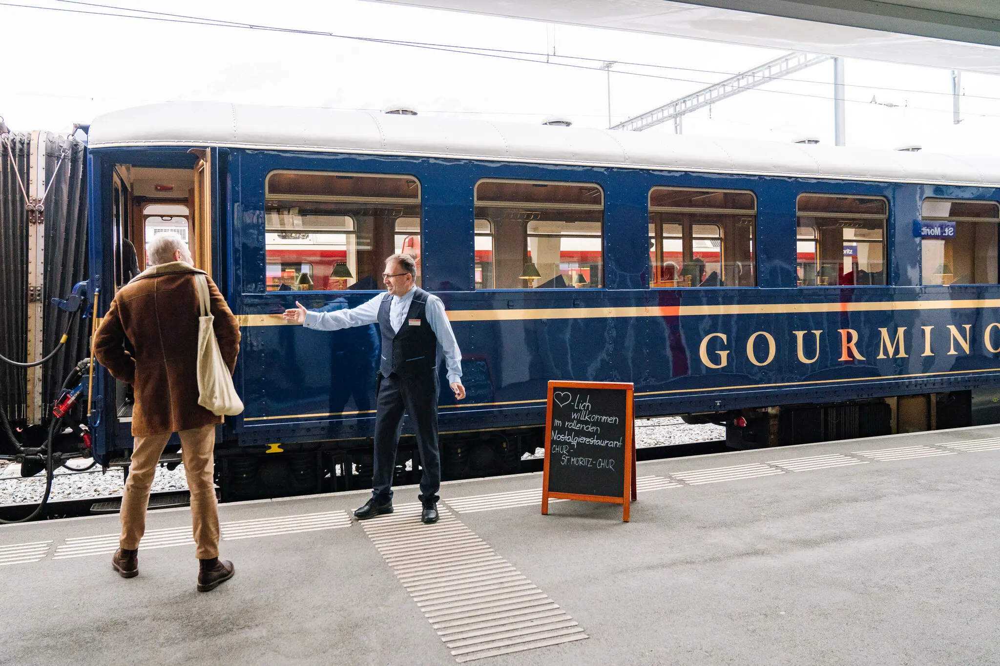

Clara Tuma for The New York Times
It was a familiar sound in any decent Central European restaurant: the reassuring whack-whack-whack of a chef flattening the schnitzel I’d ordered from the waiter a minute earlier. The crisp tablecloth in front of me shined bright white, and the banquette seating offered the same minimalist design as some of the region’s trendiest spots. But one aspect was different from my other recent fine-dining experiences: In the panoramic window facing my table, an Old World landscape was flying by at over 90 miles an hour.
I was in the dining car of a train, halfway from my home in Prague to an event in Budapest. Despite the great service and cool décor, the meal was wildly better than I had any right to expect: a crisp, improbably thin, fried chicken fillet, tender on the inside, accompanied by the Platonic ideal of potato croquettes and a craft beer that had been custom-brewed for the train. It was not just good. It was spectacular.
Much like the renaissance of night trains, dining cars are blossoming in Europe. Instead of the tired fare of previous eras, many now offer seasonal menus that highlight regional recipes and local producers. On some trains, the standards are quite high, though prices are generally affordable, with main courses often starting around 12 euros, or about $13.
The public has caught on. On social media, fans share photos of their favorite onboard meals. Connoisseurs argue over which railways have the best menus, rooting for Polskie Koleje Państwowe (PKP) in Poland, Deutsche Bahn in Germany or Czech Railways, where I’d had my schnitzel epiphany. It is completely unlike the situation in the United States, where Amtrak killed off most dining cars on train routes east of the Mississippi River in 2019.
To learn more, I reached out to David Ecker, who runs the @_DiningCar Twitter account from his home in Vienna. The food on European trains seems to be flourishing in Central and Eastern Europe, he said, while dining cars have become a rarity in much of Western Europe.
“I think in Central and Eastern Europe, you get the best experience,” he said. “But of course, if you’re looking for the highlights, then you have to go to Switzerland.”
With a few tips from Mr. Ecker, I planned a trip that would allow me to sample a handful of dining cars, routing my journey through Vienna, since much of the renaissance in European train travel seems to be driven by Austria’s national railway, ÖBB. From Prague, I would retry the Czech Railways dining car, then connect to a Polish train with a WARS dining car. After an overnight stay in Vienna, I would take the superfast ÖBB Railjet train to visit a friend in Zurich and take a train to the Alps. Later, I’d head home while sampling the meals on Germany’s national railway, taking Deutsche Bahn’s speedy InterCity Express (ICE) trains.

Before I left, I loaded the Eurail/Interrail Rail Planner app onto my phone and bought a five-day, first-class adult train pass for 376 euros. I looked up dining car menus online, booked a couple of hotels along my route, then packed my bag and walked to Praha Hlavní Nádraží, the Czech capital’s main train station, skipping lunch to ensure I had a healthy appetite.
Schnitzel, goulash and Moravian wineI wasn’t the first passenger in the dining car en route to the Czech Republic’s eastern city of Ostrava, which was how I hit my first snag. I wanted to order an updated Czech classic, pork roast with grilled zucchini and spinach, but the charmingly goofy young waitress happily informed me that the last two portions had been ordered by the burly gentlemen nursing the first of many bottles of Pilsner Urquell beer at the next table over. Cruelly, they had also taken the last portions of the cream of carrot soup with tarragon.
I opted for goulash, as well as another schnitzel — pork this time — with potato salad. As the barren fields of the central Czech countryside gave way to the snowcapped hills of the Bohemian-Moravian Highlands, I cooled down with one of the train’s unique drinks: a New England-style pale ale from the craft brewery Pivovar Chroust, brewed in partnership with another local maker, Pivovar Falkon, exclusively for the JLV dining cars on Czech trains and available nowhere else. Super fruity and very low in bitterness, it was an excellent, mood-elevating apéritif.
There was nothing wrong with my goulash either: served hot, filled with chunks of tender beef and potatoes wrapped in a thick, paprika-inflected broth. The pork schnitzel that followed seemed like a step down from the transcendent version that had inspired my interest — crunchy enough on the outside, but not as tender inside. The potato salad redeemed the meal, echoing my grandmother’s recipe: a tower of well-cooked potato cubes, larded with pieces of dill pickles, boiled egg and tender carrots, bound together in a rich mayonnaise dressing.
Another exclusive bottle took things to another level: Znovín Znojmo Kerner 2020, a late-harvest semi-dry wine from the country’s eastern region of Moravia. Moravian whites have gained a buzz in the United States in recent years, and I could see why. Descended from riesling and trollinger, the kerner grape showed off flinty mineral notes with a touch of raisins and honey — like its parent riesling, but with its own style. I left the train feeling satisfied, not least because of the price: the whole meal came out to 412 Czech koruny, or about $19.
Paprika chicken and organic beerAfter an hour at the station at Ostrava, I was ready to see how a Polish dining car would compare. But when I boarded the PKP train, I learned an important lesson about dining cars. “I guess they left it in Poland,” the conductor replied, when I asked where our train’s dining car might be. Three hours later, I disembarked at the main station in Vienna, famished.
That was the only disaster I experienced. After a dreamy night at the city’s new Hotel Josephine, I stopped for a light breakfast at the historic Viennese coffeehouse Café Sperl in preparation for lunch aboard the ÖBB Railjet to Zurich.
The flat landscape outside Vienna gave way to hills, followed by mountains. I sent my son a photo of the display showing the train’s speed as 233 kilometers, or just under 145 miles, an hour. It felt like we were on a plane, though the seats were more spacious.
As new and shiny as it appeared, the dining car was less enjoyable than the older Czech Railways version in many regards, with fewer seats, a plastic feel and no tablecloths — crisp, white or otherwise. Service was less attentive, too, reflected in the lukewarm truffle-celery soup, which was otherwise creamy and filling, hinting of nutmeg and underplaying the truffle-oil notes. A regional main course, kärntner ritschert (9.90 euros), improved things: a rib-sticking, cassoulet-like stew of pearl barley, white beans and smoked pork morsels from the Austrian region of Carinthia near Italy and Slovenia. Fragrant with marjoram and parsley, it put a point on the ÖBB scoreboard. Another plus was the remarkable Domäne Wachau Riesling Federspiel Terrassen 2022 (12.70 euros), a white wine from Austria’s Wachau region on the Danube, featuring intense stone-fruit, lime and pear notes.
As the scenery gained elevation, I watched for snow but saw very little until after Innsbruck. Once the sun was behind the mountains, I ordered supper: organic paprika chicken with spätzle (12.90 euros), and a local organic beer, Schladminger Bio Zwickl (4.30 euros). I didn’t mind the cold temperature on the lager, but I would have preferred the chicken warmer, and with fewer crunchy bits of cartilage, or whatever it was that was not meat. It had a flavorful, creamy sauce, however, that soaked nicely into the pasta.
Overall, it was a decent effort, and I appreciated that the Austrian menu also listed vegetarian and vegan options. But my meals suffered from the Railjet dining car’s atmosphere and lackluster service, and as I left the train station in Zurich, I was already looking forward to my trip through the Alps the next morning.
Smoked trout and ProseccoAt first it seemed like Zurich hadn’t changed much since my last visit 30 years earlier. But I noticed a number of new buildings as our train slipped out of the city, sliding under the sunrise alongside Lake Zurich toward Chur, where my next connection waited.
Across the platform, I spotted the scarlet cars of the Rhaetian Railway, and the wood-lined, century-old dining car of a transalpine train known as the Gourmino.
The waiter welcomed me graciously, extending his hand for me to choose any table I liked in the vintage-1920s dining car. It was just before 9 a.m. when we departed. A few minutes later I was sampling the first bites of my fisherman’s breakfast (28 francs, or about $31): cold fillets of smoked trout, warm rolls, butter, jam, honey, Prosecco and coffee, along with a croissant so hot, crisp and flaky I thought it might have been deep-fried.
It was an experience of another order, as Mr. Ecker had said. The tablecloths were cream-colored, not white, and felt soft and smooth instead of crisp and starchy. Tiny lamps illuminated each table, with foldable metal hoops next to them — to hold Champagne bottles, I imagined. It felt like the love child of the Orient Express and a midcentury ski chalet, with six four-seat booths and five two-seat tables furnished in shiny wood paneling and thick brocade fabric. I sipped my Prosecco, ate a bite of buttery smoked trout, and counted my blessings as the train rose into snowy peaks of the Alps on our two-hour journey to St. Moritz.
After disembarking in St. Moritz, visiting the museum dedicated to the painter Giovanni Segantini and sightseeing for a few hours, I boarded a different Gourmino train back to Chur. It offered more of the same, only better.
For lunch, I chose the three-course, prix fixe menu (49 francs) and a glass of Von Salis Heidi-Wii Maienfelder Blanc de Noir (9 francs), an elegantly dry white wine. The service was impeccable, with palpable attention to detail. The buttery potato-leek soup arrived steaming hot. Chicken stroganoff included yellow heirloom carrots, perfectly cooked, a snowball of short-grain rice and a pepper-scented sauce. For dessert, the flaky, caramelized apple pie split the difference between an Old World tarte and the “as American as” recipe. Outside the window was a series of photo-worthy viaducts, tunnels, bridges and mountain peaks, intensified by the exquisite cuisine and historic décor inside. Announcements in English and German explained that our route was part of a UNESCO World Cultural Heritage listing, which seemed fair: The scenery was over-the-top gorgeous. But if I could, I’d give an award to the dining car itself.
Currywurst and potato röstiThings had to come down from the literal heights of the Rhaetian Railway, but the next day’s Deutsche Bahn dining car to Karlsruhe, Germany, tried its best. A nonalcoholic Erdinger wheat beer (4.40 euros) offered the proper phenolic and metallic notes of the boozy original and made a rustic pairing for my linseneintopf, or lentil soup (10.90 euros), filled with frankfurter-style sausage slices and served with an organic roll. My waiter was surly but attentive, and the maroon booths of the ICE train felt clean and spacious. The lack of a tablecloth on the plastic surface became apparent, however, when the train dipped into a curve, sending my beer bottle on a slide toward disaster that I averted with a grab at the last second.
Another dish, potato rösti with apple sauce (6.50 euros), sounded fun but flopped, arriving too soggy to eat. As we approached my destination for the night, I found myself thinking that Deutsche Bahn could do better.
Which they did, on my way home the next day. On an ICE train across southern Germany, the service was helpful, not surly, and the currywurst with French fries (5.90 euros) tasted better than anything I remembered in the snack’s hometown, Berlin, with crisp fries to soak up the ketchup and curry powder. It seemed like junk food, or at least street food, might be where the Deutsche Bahn dining car hit its stride.
As I approached Prague on my last train, the app on my phone showed that I’d traveled over 2,400 kilometers, or 1,500 miles, spending over 32 hours on 12 trains over the course of five days. I had a much better appreciation for dining cars, but I couldn’t help thinking of what I hadn’t tasted yet. I still hadn’t tried the food on trains in Slovakia or Hungary, which Mr. Ecker had also recommended. I still hadn’t eaten on trains in Romania or Serbia, which many fans loved, and somewhere out there was a Polish dining car with my dinner on it.
Somewhere out there, I thought, was another culinary revelation.